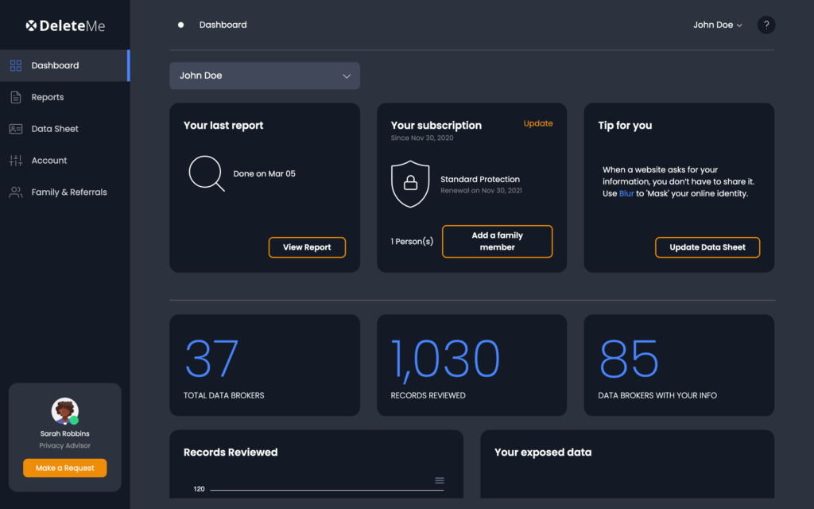
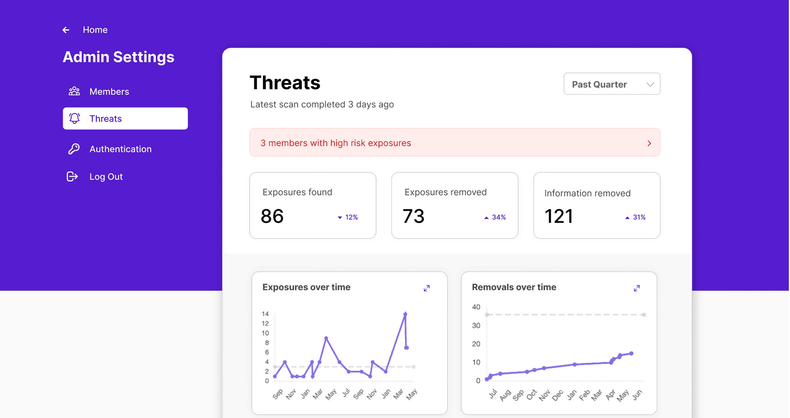
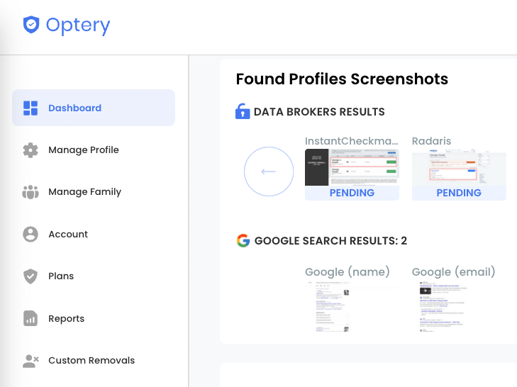
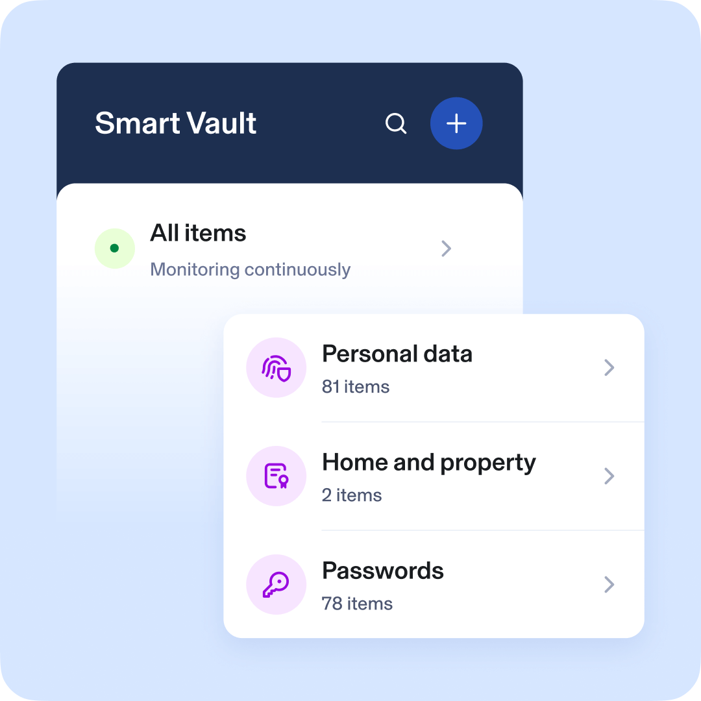

6 Best DeleteMe Alternatives for 2026
Tested, compared, and backed by real user reviews
You searched yourself on Google and it was creepy. Old info, personal details, and data broker listings lingering online for anyone to find.
You thought about DeleteMe but heard mixed reviews on thoroughness and speed. So we dug in. We read through hundreds of reviews on Reddit and Trustpilot, tested each service ourselves, and pulled findings from the Consumer Reports data removal study that tested seven data removal services head to head.
One finding that surprised us. According to Consumer Reports, manual opt-out requests submitted by users themselves achieved a 70% removal rate after four months. Automated services ranged from roughly 27% (DeleteMe) to the high 60s (Optery). That gap sparked a huge discussion on r/privacy about whether these services are worth it at all.
Our take? They still save you a ton of time. But the service you pick matters a lot. Here is what we found.
Quick comparison
| Pricing | ||||||
| Starting price | $8.71/mo | $7.99/mo | $14.99/mo | $3.99/mo | $12/mo | $12.99/mo |
| Automation | ||||||
| Recurring removals | ✓ | ✓ | ✓ | ✓ | ✕ | ✓ |
| Manual removal option | ✕ | ✕ | ✓ | ✓ | ✕ | ✓ |
| Free scan | ✕ | ✕ | ✕ | ✓ | ✕ | ✕ |
| Features | ||||||
| Wide broker coverage | ✓ | ✓ | ✓ | ✓ | ✕ | ✓ |
| Progress updates | ✓ | ✓ | ✓ | ✓ | ✓ | ✓ |
| Family plan | ✓ | ✓ | ✓ | ✕ | ✓ | ✓ |
| Money-back guarantee | ✕ | ✓ | ✓ | ✓ | ✓ | ✓ |
| 24/7 support | ✓ | ✓ | ✕ | ✓ | ✓ | ✓ |
| Good Trustpilot reviews | ✓ | ✓ | ✕ | ✕ | ✕ | ✓ |
DeleteMe
Best for simple setup and brand trust
From $8.71/mo
DeleteMe is the original data removal service and still the most recognized name in the space. It is easy to set up, simple to manage, and it works for most people.
It automatically opts you out of dozens of people-search sites on a recurring basis and provides regular progress updates. The dashboard is clean and straightforward, with a free data checker scan and a family plan. Trusted by investigators and legal professionals, DeleteMe is available in both the USA and Europe.
That said, the Consumer Reports study raised some eyebrows. After four months of testing, DeleteMe successfully removed only 27% of user profiles. That is significantly lower than what many users expect from a premium service. And the reviews reflect that tension.
What users are saying
"Since that time over 175 sites have been scoured off my record on my benefit by the team at DELETE ME."
"When I tell you there were only 2 out of the 85 that had the personal info removed...I am not exaggerating."
"There were many sites that they missed. My information is still out there. They limit you to 10 requests per quarter."
"I've used DeleteMe for 2+ years. Aside from voter records, nothing is out there anymore."
27% removal rate after four months in the Consumer Reports study. That was the lowest among the seven services tested.
Pros
- Simple, fast onboarding
- Strong brand reputation
- Covers the most dangerous data brokers
- Available in USA and Europe
- 24/7 customer support
Cons
- Lowest removal rate in Consumer Reports study
- No money-back guarantee
- No manual removal controls
- Limited to 10 requests per quarter
- Some users report missed listings
Incogni
Best for hands-off, automated privacy
From $7.99/mo (billed annually)Incogni is backed by Surfshark and consistently praised on Reddit for its automated, large-scale opt-outs. It covers over 420 data brokers, which is verified by an independent Deloitte audit confirming over 245 million successful removals.
The setup is dead simple. You enter your info, and Incogni handles everything from there. It scans and removes listings on a recurring basis, blocks spam emails, detects phishing attempts, and gives you a clean monthly progress report. It also offers a family plan, money-back guarantee, and 24/7 support.
Available in the USA, EU, UK, and Canada, which makes it the broadest option geographically. On Trustpilot it carries a 4.4 out of 5 across nearly 2,000 reviews.
What users are saying
"I went from receiving many emails a day to receiving none. It does take time to have your data removed but it's worth every penny."
"I've noticed significantly fewer spam texts and calls."
"I was getting more emails than ever. The report they give you monthly is probably AI generated."
"Budget-friendly and effective. Set it and forget it."
420+ data brokers covered, verified by an independent Deloitte audit. 4.4/5 on Trustpilot across nearly 2,000 reviews.
Pros
- 420+ data broker coverage (Deloitte audited)
- Clean dashboard and monthly reports
- Backed by Surfshark
- Broadest geographic availability
- Money-back guarantee
- 4.4/5 Trustpilot rating
Cons
- No manual removal controls
- No free scan
- No mobile app
- Some users report AI-generated reports
Kanary
Best for deep coverage and hands-on control
From $14.99/mo
Kanary has the largest broker list and the most accurate exposure detection we have seen. It gives you both automated recurring removals and manual opt-out controls, which is rare. You also get a progress report within 48 hours, compared to 7 days for DeleteMe.
The tradeoff is speed. TechRadar's hands-on testing found that after two weeks, Kanary had only removed six profiles. Brokers have up to 45 days to comply, so full results take 30 to 90 days. That is slower than some rivals.
Kanary is privacy-focused and highly configurable. It is ideal if you want full control over what gets removed and how. But be prepared for a steeper learning curve. Available in the USA only.
What users are saying
"Everything worked as promised, although it took about 3-6 months to remove at least 80% of the information."
"The last 20% of information, including on very famous sites they promised to take care of, was not removed. They told me they couldn't do much and that I could just contact the companies myself for removal."
"They cover the largest list of brokers and offer the highest number of accurate exposures. Free trial was a plus for testing it out."
48-hour first progress report vs. 7 days for DeleteMe. But full removals take 30 to 90 days because brokers have up to 45 days to comply.
Pros
- Largest broker list
- High-accuracy exposure detection
- Manual removal controls
- Fast initial progress report (48 hours)
- Free trial available
Cons
- More expensive than competitors
- Full removal takes 30-90 days
- Steeper learning curve
- No 24/7 support
- USA only
Optery
Best for budget-conscious users
From $3.99/mo
Optery offers the lowest starting price and a free initial scan before you pay anything. It supports both automated recurring removals and manual opt-out capabilities depending on your plan tier.
In the Consumer Reports study, Optery performed the best among all tested services. It scored 3 percentage points better than runner-up EasyOptOuts and a full 41 percentage points better than DeleteMe. Optery's own statement on the study provides additional context. That makes it the data-backed pick for value.
The Ultimate plan runs about $25/month and gets you full automation. One user reported going from 150 broker listings down to just 23 within months. Others have seen spam calls drop from 5-10 per day to nearly zero. Available in the USA.
What users are saying
"Within months, they successfully reduced these listings from 150 to just 23. I've experienced a significant decrease in spam emails and unsolicited sales calls."
"I used to get between 5 and 10 robocalls per day but not anymore. I purchased the ultimate plan. I recommend it highly."
"The best $25 a month you can spend to remove your personal information from the data broker world and become an online ghost."
"There is no way to verify that the actions they claim to take have actually been taken. I saw little to no apparent progress in 6 months' time."
"They still haven't removed my profile. I paid in December. It is now March. They took forever to respond to my emails."
Best performer in the Consumer Reports study. Scored 41 percentage points higher than DeleteMe in removal rate.
Pros
- Lowest starting price at $3.99/mo
- Free scan included
- Best performer in Consumer Reports study
- Manual + automated options
- Money-back guarantee
Cons
- No family plan
- Some users report slow response times
- Hard to verify removal claims
- USA only
Aura
Best for all-in-one identity protection
From $12/mo
Aura is not just a data removal tool. It is a full identity protection suite with spam blocking, phishing protection, a free data checker, a family plan, money-back guarantee, and 24/7 support.
It covers roughly 140 to 200 data broker sites, but it does not cover major platforms like Spokeo, BeenVerified, or Intelius. It also does not support custom removal requests. The UX is polished and the interface is one of the best we have seen. But if pure data removal is your priority, Aura has some notable gaps.
One user added Aura alongside DeleteMe specifically to see if it would catch brokers that DeleteMe missed, and it did. But others complain there is "no proof of actual work." A common pricing complaint is unexpected renewal hikes. One long-term user was shocked when his annual membership jumped from $120 to $199 with no warning. Available in the USA.
What users are saying
"Aura actively works to remove my personal information from data broker sites, which gives me confidence that my privacy is being protected."
"I added Aura alongside DeleteMe to see if it would catch brokers DeleteMe missed. It did."
"Sent hundreds of opt-outs but there is no way of fact-checking. No proof of actual work."
"I was shocked when my annual membership suddenly jumped from $120 to $199 without warning."
Covers 140-200 broker sites but does not include major platforms like Spokeo, BeenVerified, or Intelius. Better as a complement to a dedicated removal service than a standalone solution.
Pros
- Polished, easy-to-use interface
- Broader security features (phishing, identity theft)
- Family plan available
- Money-back guarantee
- Caught brokers other services missed
Cons
- No recurring automated removals
- No manual opt-out controls
- Doesn't cover Spokeo, BeenVerified, Intelius
- Unexpected renewal price hikes
- No way to verify removal claims
- USA only
Dataseal
Best for hands-on support and ease of use
From $12.99/moDataseal offers an intuitive dashboard and is highly rated for ease of use. It provides both manual opt-out controls and automated recurring removals with clear progress tracking.
One user reported being "nearly impossible to find" within 3 months. But results are inconsistent. Another user noticed that Dataseal kept reporting the same Intelius removal over and over, suggesting either the broker re-adds data immediately or the service double-counts its removals. Only 66 out of 198 records were removed for one user.
Something to know. Dataseal was formerly run by the same team behind the data broker ThatsThem, with a parent company called "Durt Holdings." They discontinued the affiliate relationship with people search sites in August 2023, but this history has been widely documented and discussed on r/privacy as a potential conflict of interest. Available in the USA.
What users are saying
"Within 3 months, I was nearly impossible to find."
"Either Intelius just adds my data back again immediately after it's removed, or DataSeal keeps reporting the same removal over and over."
"They only removed 66 out of 198 records."
"No visibility or transparency about which websites they're removing your information from."
Conflict of interest flag. Dataseal was formerly operated by the same team behind the data broker ThatsThem (parent company "Durt Holdings"). The affiliate relationship ended in August 2023, but this is widely documented and discussed on r/privacy.
Pros
- Responsive customer support
- Intuitive dashboard
- Manual + automated removals
- Money-back guarantee
- Some users see fast results
Cons
- Former ties to data broker industry
- Inconsistent removal results
- No free scan
- Possible duplicate removal reporting
- No way to close account on website
- USA only
How data removal services work
Every data removal service follows a similar process.
- Scan – The service searches known data brokers for your personal info.
- Request – It generates opt-out requests, either automated or manual.
- Track – Each request is monitored until your profile is removed or the record expires.
- Repeat – Periodic re-scans catch any new re-listings.
Keep in mind that data brokers have up to 45 days to comply with removal requests. Most services need 30 to 90 days to show full results. And because brokers constantly re-scrape public records, your data will come back if you stop the service.
Which DeleteMe alternative is right for you?
Frequently asked questions about DeleteMe alternatives
What is the best DeleteMe alternative?
It depends on your priorities. Incogni is the best for hands-off automation with 420+ broker coverage. Optery scored highest in the 2026 Consumer Reports study and has the lowest starting price at $3.99/mo. Kanary offers the deepest broker coverage with manual controls.
How much do data removal services cost?
Data removal services range from $3.99/mo (Optery) to $14.99/mo (Kanary). DeleteMe starts at $8.71/mo, Incogni at $7.99/mo billed annually, Aura at $12/mo, and Dataseal at $12.99/mo.
Do data removal services actually work?
Yes, but results vary significantly. The 2026 Consumer Reports study found that Optery performed best among tested services, while DeleteMe removed only 27% of profiles after four months. Manual opt-out requests by users themselves achieved a 70% removal rate. These services save time but are not 100% effective.
How long does it take for data removal services to work?
Most services need 30 to 90 days to show full results. Data brokers have up to 45 days to comply with removal requests. Kanary provides an initial progress report within 48 hours, while DeleteMe takes about 7 days for a first report.
Is Incogni better than DeleteMe?
Incogni covers 420+ data brokers (verified by a Deloitte audit) compared to DeleteMe's smaller broker list. Incogni is also available in the USA, EU, UK, and Canada, while DeleteMe covers only the USA and Europe. Incogni offers a money-back guarantee, which DeleteMe does not. On Trustpilot, Incogni has a 4.4/5 rating across nearly 2,000 reviews.
What is the cheapest DeleteMe alternative?
Optery is the cheapest DeleteMe alternative, starting at $3.99/mo. It also offers a free initial scan before you pay anything. Optery was the best performer in the 2026 Consumer Reports data removal study.
Will my data come back after using a removal service?
Yes. Data brokers constantly re-scrape public records, so your information will reappear if you stop using the service. This is why most services offer recurring removal subscriptions to continuously monitor and re-submit opt-out requests.
About this comparison
We tested each service ourselves, read hundreds of user reviews on Reddit (r/privacy, r/personalfinance, r/cybersecurity) and Trustpilot, and referenced the Consumer Reports data removal study. We also consulted expert reviews from Security.org, TechRadar, CyberInsider, and Cybernews.
Pricing, features, and availability are current as of March 2026. We update this page regularly.